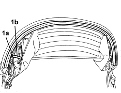
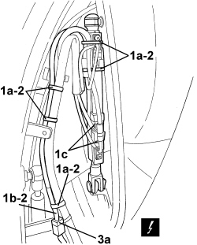
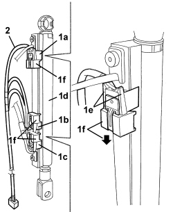

7030H75 HOOD FIFTH ARC POSITION SENSOR (ONE), LEFT OR RIGHT - R.R.
- Path
- Procedures > 70 FITTINGS > 7030 SUN ROOF/GLASS PANEL > 7030H AUTOMATICALLY OPERATED HOOD > 7030H75 HOOD FIFTH ARC POSITION SENSOR (ONE), LEFT OR RIGHT - R.R.
- Kind
- repair procedure (removal / refitting; the operation number is the code)
- Applies to
- engines: 2.2 JTS, 3.2 JTS; all production periods
- Interactive page
- https://sloeber94.github.io/elrnDB-aBrrSpdr/en/#/946004108
Applies to: engines: 2.2 JTS, 3.2 JTS; all production periods
 Removing
Removing
 Refitting
Refitting- Prepare the hood for the procedure.
Op. 0010T79 HOOD HYDRAULIC SYSTEM - DISCHARGE AND RESTORE PRESSURE
1. Using the electric control, place 5th arc (1a) in the raised position (as illustrated), hood compartment cover (1b) in a fully raised position and side covers (flaps) (1c) in a lowered position (as illustrated).

Applies to: engines: 2.2 JTS, 3.2 JTS; all production periods
1. Working on the left side of the 5th arc, using a drill, remove rivet (1a) (keep the parts of the rivet removed) and remove rod (1b) for the hood inner fabric.

Applies to: engines: 2.2 JTS, 3.2 JTS; all production periods
1. Mark the position of retaining bands (1a) for wiring (1b) for sensors (1c) for the hydraulic actuator.
2. Cut sensor (1c) wiring (1b) retaining bands (1a).
3. Disconnect electrical connection (3a) for sensors (1c) after having released the retainer from the hood structure.
Description | Connector | |
|---|---|---|
3a | HOOD MAIN HOOP POSITION SENSOR |

Applies to: engines: 2.2 JTS, 3.2 JTS; all production periods
1. Mark the reciprocal position of sensors (1a), (1b) and (1c). Disconnect sensors (1a), (1b) and (1c) from hydraulic actuator (1d) after having released tabs (1e) and slid out retainers (1f).
2. Keep the sensor unit and wiring.

Applies to: engines: 2.2 JTS, 3.2 JTS; all production periods
Refitting
Removing- Check that the sensor assembly is not damaged.
- Fit the sensors in place in the reciprocal position marked during the removal, then secure them using the retainers: attach the tabs.
- Connect the electrical connection for the sensors and attach the retainer to the hood structure.
- Fit the wiring retaining bands in the positions marked during removal.
- Position the hood inner fabric rod and fit the rivet.
- If discharged, restore the hood hydraulic system pressure.
Op. 7030H03 HOOD MANUAL OPENING FOLLOWING DEACTIVATION OF HYDRAULIC SYSTEM - CARRY OUT PROCEDURE
- Check that the hood is working correctly.
Topics linked from this page (3)
- 0010T79 HOOD HYDRAULIC SYSTEM - DISCHARGE AND RESTORE PRESSURE
- 7030H03 HOOD MANUAL OPENING FOLLOWING DEACTIVATION OF HYDRAULIC SYSTEM - CARRY OUT PROCEDURE
- K199 HOOD ARCH POSITION SENSOR